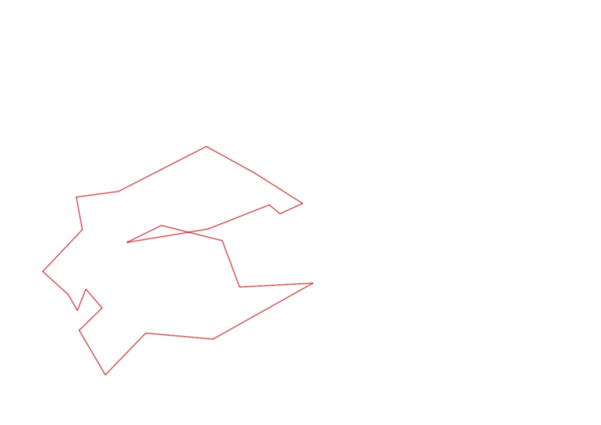
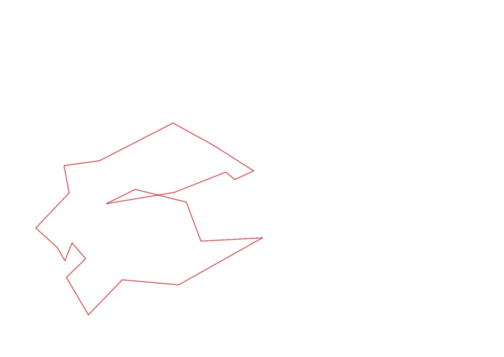

| Control |
Points |
Time Punched |
Distance |
Your Time |
Pace |
Place |
Fastest Time |
Median Time |
% Behind Fastest |
| 92 |
90 |
|
0.23 |
0:02:20 |
10:08 |
3 / 11 |
0:02:15 |
0:02:35 |
3% |
| 35 |
30 |
|
0.05 |
0:01:48 |
36:00 |
5 / 12 |
0:01:31 |
0:01:55 |
18% |
| 47 |
40 |
|
0.09 |
0:01:27 |
16:06 |
4 / 11 |
0:00:54 |
0:01:31 |
61% |
| 57 |
50 |
|
0.2 |
0:05:37 |
28:05 |
6 / 7 |
0:03:52 |
0:04:28 |
45% |
| 107 |
100 |
|
0.2 |
0:02:38 |
13:10 |
10 / 21 |
0:00:00 |
0:02:52 |
-% |
| 63 |
60 |
|
0.35 |
0:02:33 |
07:17 |
5 / 18 |
0:01:59 |
0:02:42 |
28% |
| 32 |
30 |
|
0.15 |
0:00:56 |
06:13 |
13 / 27 |
0:00:36 |
0:00:56 |
55% |
| 44 |
40 |
|
0.12 |
0:01:01 |
08:28 |
3 / 29 |
0:00:52 |
0:01:49 |
17% |
| 53 |
50 |
|
0.2 |
0:02:26 |
12:10 |
15 / 26 |
0:01:31 |
0:02:15 |
60% |
| 69 |
60 |
|
0.12 |
0:01:17 |
10:41 |
12 / 29 |
0:00:45 |
0:01:18 |
71% |
| 71 |
70 |
|
0.06 |
0:00:57 |
15:50 |
5 / 25 |
0:00:48 |
0:01:13 |
18% |
| 54 |
50 |
|
0.08 |
0:00:33 |
06:52 |
4 / 33 |
0:00:27 |
0:00:45 |
22% |
| 41 |
40 |
|
0.09 |
0:01:51 |
20:33 |
10 / 13 |
0:01:01 |
0:01:43 |
81% |
| 40 |
40 |
|
0.11 |
0:01:57 |
17:43 |
23 / 24 |
0:00:45 |
0:01:00 |
160% |
| 77 |
70 |
|
0.18 |
0:02:08 |
11:51 |
7 / 21 |
0:01:35 |
0:02:21 |
34% |
| 59 |
50 |
|
0.21 |
0:02:27 |
11:40 |
5 / 18 |
0:02:00 |
0:02:47 |
22% |
| 61 |
60 |
|
0.24 |
0:03:26 |
14:18 |
13 / 19 |
0:02:14 |
0:03:16 |
53% |
| 37 |
30 |
|
0.4 |
0:06:16 |
15:40 |
5 / 6 |
0:03:20 |
0:04:58 |
88% |
| 42 |
40 |
|
0.26 |
0:04:54 |
18:50 |
5 / 6 |
0:02:08 |
0:03:18 |
129% |
| 127 |
20 |
|
0.17 |
0:01:37 |
09:30 |
4 / 12 |
0:01:27 |
0:01:48 |
11% |
| 126 |
20 |
|
0.22 |
0:01:46 |
08:01 |
2 / 3 |
0:01:29 |
0:01:46 |
19% |
| 130 |
30 |
|
0.14 |
0:00:34 |
04:02 |
11 / 19 |
0:00:00 |
0:00:33 |
-% |
| Finish |
0 |
|
0.29 |
0:02:47 |
09:35 |
4 / 4 |
0:01:38 |
0:02:01 |
70% |
Total Distance Covered: 4.16km
Points Scored: 1070
Late Penalty: 0
Final Score: 1070
Total Time: 0hours 53minutes 16seconds
Efficiency: 257.21 points/km
 
